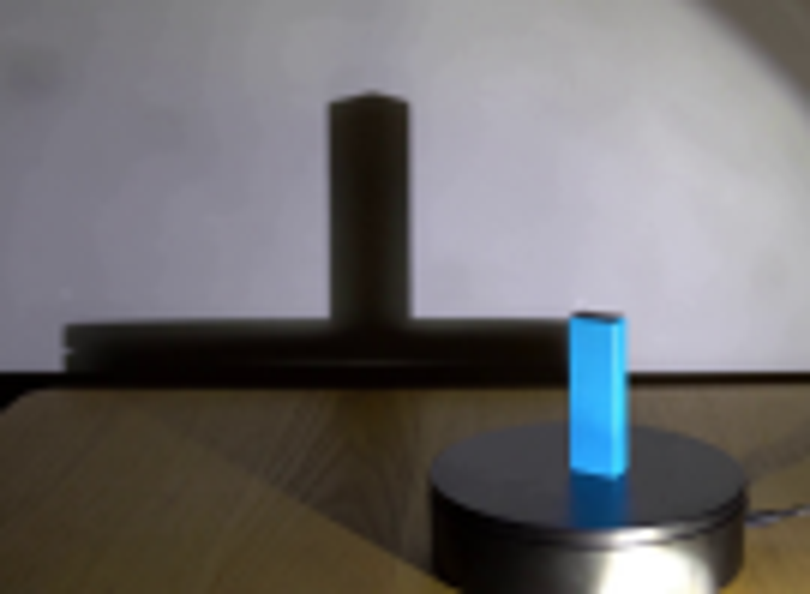
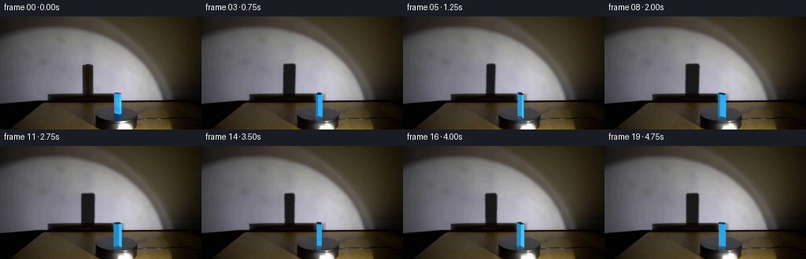
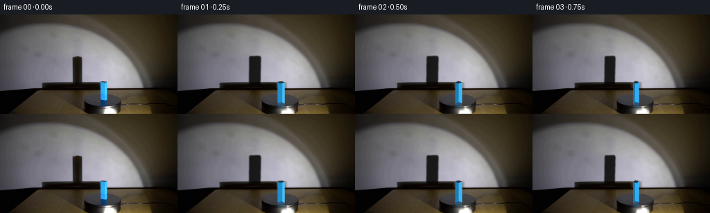

CODING AGENTS AS PIXEL WORLD MODELS
traex/GPT-5.6-Sol · 0074
点击播放 · 原生 RGB 像素
逐轮保存的候选
回放视频、检查图与代码变化。
每份候选均可单独播放。实际图片检查记录在下方工具轨迹中。
候选 01播放与检查图
点击播放 · 原生 RGB 像素

展开代码变化
--- 上一保存版本
+++ 本次保存版本
@@ -0,0 +1,192 @@
+from pathlib import Path
+import math
+import numpy as np
+import cv2
+from PIL import Image
+import artifact_io
+
+CASE = Path(__file__).resolve().parent
+W, H = 256, 144
+
+
+def soft_replace(base, replacement, mask, blur=1.2):
+ """Replace a photographed object by a locally reconstructed clean plate."""
+ m = cv2.GaussianBlur(mask.astype(np.float32), (0, 0), blur)
+ m = np.clip(m, 0, 1)[..., None]
+ return base * (1-m) + replacement * m
+
+
+def make_clean_plate(src):
+ a = src.astype(np.float32)
+ clean = a.copy()
+
+ # Reconstruct the wall behind the tall cast shadow. Per-scanline
+ # interpolation retains the natural vertical light falloff and camera noise.
+ repl = a.copy()
+ x0, x1 = 92, 132
+ for y in range(52, 104):
+ left = a[y, x0-2:x0+2].mean(axis=0)
+ right = a[y, x1-2:x1+2].mean(axis=0)
+ for x in range(x0, x1+1):
+ q = (x-x0)/(x1-x0)
+ # smooth interpolation follows the broad spotlight gradient
+ q = q*q*(3-2*q)
+ repl[y, x] = left*(1-q) + right*q
+ m = np.zeros((H,W), np.uint8)
+ cv2.rectangle(m, (97,55), (126,102), 255, -1)
+ # avoid replacing the horizontal platform shadow at its bottom edge
+ for y in range(97,103):
+ m[y] = (m[y].astype(np.float32) * max(0, (102-y)/5)).astype(np.uint8)
+ clean = soft_replace(clean, repl, m/255.0, 1.4)
+
+ # Remove the blue block and its blue reflection. Neighboring pixels on
+ # each row provide the correct wall, tabletop, and turntable material.
+ a2 = clean.copy(); repl2 = a2.copy()
+ x0, x1 = 139, 162
+ for y in range(92, 140):
+ # Wider samples make the interpolation robust to antialiased blue edges.
+ left = a2[y, 136:140].mean(axis=0)
+ right = a2[y, 160:164].mean(axis=0)
+ for x in range(x0, x1+1):
+ q=(x-x0)/(x1-x0)
+ repl2[y,x] = left*(1-q)+right*q
+ m2=np.zeros((H,W),np.uint8)
+ cv2.rectangle(m2,(142,94),(157,138),255,-1)
+ clean=soft_replace(clean,repl2,m2/255.0,1.0)
+ return np.clip(clean,0,255).astype(np.uint8)
+
+
+def alpha_over(img, color, alpha):
+ al = np.clip(alpha,0,1)[...,None]
+ return img*(1-al)+np.asarray(color,np.float32)*al
+
+
+def cast_shadow(img, theta):
+ # The nearby lamp enlarges the 8x5 cm block into the conspicuous wall
+ # silhouette. Rectangle support width varies continuously as it rotates.
+ ca, sa = math.cos(theta), math.sin(theta)
+ # transformed horizontal extents of all four corners
+ corners=[]
+ for X in (-4.0,4.0):
+ for Y in (-2.7,2.7):
+ xr=ca*X-sa*Y; yr=sa*X+ca*Y
+ corners.append(1.72*(xr+0.10*yr))
+ lo, hi=min(corners),max(corners)
+ cx=111.4
+ top=61.0
+ bottom=101.5
+ # A tiny shear comes from the oblique spotlight direction.
+ shear=0.45*math.sin(theta)
+ poly=np.array([
+ [cx+lo, top+1.0], [cx+lo+1.1, top-0.7],
+ [cx+hi-1.0, top-1.0], [cx+hi+0.7, top+1.0],
+ [cx+hi+shear, bottom], [cx+lo+shear, bottom]
+ ],np.float32)
+ S=4
+ mask=np.zeros((H*S,W*S),np.uint8)
+ cv2.fillPoly(mask,[np.round(poly*S).astype(np.int32)],255)
+ mask=cv2.GaussianBlur(mask,(0,0),2.7)
+ mask=cv2.resize(mask,(W,H),interpolation=cv2.INTER_AREA).astype(np.float32)/255.0
+ # dense umbra with subtly warm bounced light, as in the photographed frame
+ return alpha_over(img, (7,6,5), mask*0.88)
+
+
+def project_vertex(x,y,z,bx=149.2,by=128.3):
+ return np.array([bx + x + .28*y, by + .36*y - z],np.float32)
+
+
+def block_geometry(theta):
+ ca,sa=math.cos(theta),math.sin(theta)
+ local=[(-4,-2.7),(4,-2.7),(4,2.7),(-4,2.7)]
+ world=[]
+ for x,y in local:
+ world.append((ca*x-sa*y,sa*x+ca*y))
+ bot=[project_vertex(x,y,0) for x,y in world]
+ top=[project_vertex(x,y,30.0) for x,y in world]
+ return local,world,bot,top
+
+
+def poly_mask(points, scale=4):
+ mask=np.zeros((H*scale,W*scale),np.uint8)
+ cv2.fillPoly(mask,[np.round(np.asarray(points)*scale).astype(np.int32)],255)
+ mask=cv2.resize(mask,(W,H),interpolation=cv2.INTER_AREA)
+ return mask.astype(np.float32)/255.0
+
+
+def draw_reflection(img, theta, bot, top):
+ # Colored reflection on the glossy black top of the turntable.
+ xs=[p[0] for p in bot+top]
+ xlo,xhi=min(xs),max(xs)
+ # mirrored, vertically compressed silhouette below the feet
+ p=np.array([[xlo,127.2],[xhi,127.2],[xhi-.25,138.0],[xlo+.35,138.0]],np.float32)
+ mask=poly_mask(p)
+ yy=np.arange(H,dtype=np.float32)[:,None]
+ fade=np.clip((138.0-yy)/10.8,0,1)
+ alpha=mask*fade*.46
+ # Reflection takes on the rotating face's light level.
+ glint=.5+.5*max(0,math.cos(theta-.45))
+ col=(20+12*glint,112+34*glint,183+42*glint)
+ return alpha_over(img,col,alpha)
+
+
+def render_block(img, theta):
+ local,world,bot,top=block_geometry(theta)
+ out=img
+ out=draw_reflection(out,theta,bot,top)
+
+ view=np.array([.26,-1.0],np.float32); view/=np.linalg.norm(view)
+ light=np.array([.80,-.60],np.float32); light/=np.linalg.norm(light)
+ faces=[]
+ # CCW local rectangle; outward side normal for edge i is (dy,-dx).
+ for i in range(4):
+ j=(i+1)%4
+ edge=np.array(world[j])-np.array(world[i])
+ n=np.array([edge[1],-edge[0]],np.float32)
+ n/=np.linalg.norm(n)
+ vis=float(np.dot(n,view))
+ if vis>0.015:
+ illum=.74+.30*max(0,float(np.dot(n,light)))
+ spec=max(0,float(np.dot(n,np.array([1.0,0.0]))))**5
+ base=np.array([40,169,241],np.float32)*illum
+ color=np.clip(base+spec*np.array([37,28,14]),0,255)
+ # far-facing visible plane first
+ depth=(world[i][1]+world[j][1])/2
+ faces.append((depth,[top[i],top[j],bot[j],bot[i]],color))
+ faces.sort(reverse=True,key=lambda z:z[0])
+ for _,poly,color in faces:
+ m=poly_mask(poly)
+ out=alpha_over(out,color,m)
+ # slim photographed edge shading helps communicate rigid rotation
+ # Dark top cap, with a small cool highlight on its lamp-facing rim.
+ topcol=np.array([39,40,42],np.float32)
+ topcol += 5*max(0,math.cos(theta-.2))
+ m=poly_mask(top)
+ out=alpha_over(out,topcol,m)
+
+ # one-pixel luminous edge on the most rightward vertical corner
+ k=int(np.argmax([p[0] for p in top]))
+ edge_mask=np.zeros((H*4,W*4),np.uint8)
+ cv2.line(edge_mask,tuple(np.round(top[k]*4).astype(int)),tuple(np.round(bot[k]*4).astype(int)),
+ 255,2,cv2.LINE_AA)
+ edge_mask=cv2.resize(edge_mask,(W,H),interpolation=cv2.INTER_AREA).astype(np.float32)/255
+ out=alpha_over(out,(105,204,249),edge_mask*.40)
+ return out
+
+
+def generate():
+ src=np.array(Image.open(CASE/'first_frame.png').convert('RGB'),dtype=np.uint8)
+ clean=make_clean_plate(src)
+ frames=[src.copy()]
+ for i in range(1,20):
+ t=i/4.0
+ theta=-2*math.pi*t/5.0 # constant-speed clockwise revolution
+ frame=clean.astype(np.float32)
+ frame=cast_shadow(frame,theta)
+ frame=render_block(frame,theta)
+ frames.append(np.clip(np.rint(frame),0,255).astype(np.uint8))
+ frames=np.stack(frames).astype(np.uint8)
+ artifact_io.save(frames,CASE)
+ return frames
+
+if __name__=='__main__':
+ generate()
可观测工具轨迹
实际执行的命令与返回图片。
命令 1exit 0
/bin/bash -lc "cat prompt.txt && printf '\\n---RULES---\\n' && cat GENERATION_RULES.md"
命令 2exit 127
/bin/bash -lc "find . -maxdepth 2 -type f -printf '%p\\n' | sort && file first_frame.png"
命令 3exit 0
/bin/bash -lc "sed -n '1,240p' artifact_io.py && python3 - <<'PY'
from PIL import Image
import numpy as np
im=np.array(Image.open('first_frame.png').convert('RGB'))
print(im.shape, im.dtype)
# key row summaries/ranges
for y in [60,80,98,100,107,108,110,120,130,140]:
print(y, [(x,im[y,x].tolist()) for x in [0,50,60,100,105,110,116,120,145,150,154,160,180,220,255]])
PY"命令 4exit 0
/bin/bash -lc "python3 - <<'PY'
try: import cv2; print('cv2',cv2.__version__)
except Exception as e: print(e)
PY"命令 5exit 0
/bin/bash -lc "python3 - <<'PY'
from PIL import Image
im=Image.open('first_frame.png')
im.crop((50,45,185,144)).resize((810,594)).save('.tmp/crop.png')
PY"命令 6exit 0
/bin/bash -lc "cat > generate.py <<'PY'
from pathlib import Path
import math
import numpy as np
import cv2
from PIL import Image
import artifact_io
CASE = Path(__file__).resolve().parent
W, H = 256, 144
def soft_replace(base, replacement, mask, blur=1.2):
\"\"\"Replace a photographed object by a locally reconstructed clean plate.\"\"\"
m = cv2.GaussianBlur(mask.astype(np.float32), (0, 0), blur)
m = np.clip(m, 0, 1)[..., None]
return base * (1-m) + replacement * m
def make_clean_plate(src):
a = src.astype(np.float32)
clean = a.copy()
# Reconstruct the wall behind the tall cast shadow. Per-scanline
# interpolation retains the natural vertical light falloff and camera noise.
repl = a.copy()
x0, x1 = 92, 132
for y in range(52, 104):
left = a[y, x0-2:x0+2].mean(axis=0)
right = a[y, x1-2:x1+2].mean(axis=0)
for x in range(x0, x1+1):
q = (x-x0)/(x1-x0)
# smooth interpolation follows the broad spotlight gradient
q = q*q*(3-2*q)
repl[y, x] = left*(1-q) + right*q
m = np.zeros((H,W), np.uint8)
cv2.rectangle(m, (97,55), (126,102), 255, -1)
# avoid replacing the horizontal platform shadow at its bottom edge
for y in range(97,103):
m[y] = (m[y].astype(np.float32) * max(0, (102-y)/5)).astype(np.uint8)
clean = soft_replace(clean, repl, m/255.0, 1.4)
# Remove the blue block and its blue reflection. Neighboring pixels on
# each row provide the correct wall, tabletop, and turntable material.
a2 = clean.copy(); repl2 = a2.copy()
x0, x1 = 139, 162
for y in range(92, 140):
# Wider samples make the interpolation robust to antialiased blue edges.
left = a2[y, 136:140].mean(axis=0)
right = a2[y, 160:164].mean(axis=0)
for x in range(x0, x1+1):
q=(x-x0)/(x1-x0)
repl2[y,x] = left*(1-q)+right*q
m2=np.zeros((H,W),np.uint8)
cv2.rectangle(m2,(142,94),(157,138),255,-1)
clean=soft_replace(clean,repl2,m2/255.0,1.0)
return np.clip(clean,0,255).astype(np.uint8)
def alpha_over(img, color, alpha):
al = np.clip(alpha,0,1)[...,None]
return img*(1-al)+np.asarray(color,np.float32)*al
def cast_shadow(img, theta):
# The nearby lamp enlarges the 8x5 cm block into the conspicuous wall
# silhouette. Rectangle support width varies continuously as it rotates.
ca, sa = math.cos(theta), math.sin(theta)
# transformed horizontal extents of all four corners
corners=[]
for X in (-4.0,4.0):
for Y in (-2.7,2.7):
xr=ca*X-sa*Y; yr=sa*X+ca*Y
corners.append(1.72*(xr+0.10*yr))
lo, hi=min(corners),max(corners)
cx=111.4
top=61.0
bottom=101.5
# A tiny shear comes from the oblique spotlight direction.
shear=0.45*math.sin(theta)
poly=np.array([
[cx+lo, top+1.0], [cx+lo+1.1, top-0.7],
[cx+hi-1.0, top-1.0], [cx+hi+0.7, top+1.0],
[cx+hi+shear, bottom], [cx+lo+shear, bottom]
],np.float32)
S=4
mask=np.zeros((H*S,W*S),np.uint8)
cv2.fillPoly(mask,[np.round(poly*S).astype(np.int32)],255)
mask=cv2.GaussianBlur(mask,(0,0),2.7)
mask=cv2.resize(mask,(W,H),interpolation=cv2.INTER_AREA).astype(np.float32)/255.0
# dense umbra with subtly warm bounced light, as in the photographed frame
return alpha_over(img, (7,6,5), mask*0.88)
def project_vertex(x,y,z,bx=149.2,by=128.3):
return np.array([bx + x + .28*y, by + .36*y - z],np.float32)
def block_geometry(theta):
ca,sa=math.cos(theta),math.sin(theta)
local=[(-4,-2.7),(4,-2.7),(4,2.7),(-4,2.7)]
world=[]
for x,y in local:
world.append((ca*x-sa*y,sa*x+ca*y))
bot=[project_vertex(x,y,0) for x,y in world]
top=[project_vertex(x,y,30.0) for x,y in world]
return local,world,bot,top
def poly_mask(points, scale=4):
mask=np.zeros((H*scale,W*scale),np.uint8)
cv2.fillPoly(mask,[np.round(np.asarray(points)*scale).astype(np.int32)],255)
mask=cv2.resize(mask,(W,H),interpolation=cv2.INTER_AREA)
return mask.astype(np.float32)/255.0
def draw_reflection(img, theta, bot, top):
# Colored reflection on the glossy black top of the turntable.
xs=[p[0] for p in bot+top]
xlo,xhi=min(xs),max(xs)
# mirrored, vertically compressed silhouette below the feet
p=np.array([[xlo,127.2],[xhi,127.2],[xhi-.25,138.0],[xlo+.35,138.0]],np.float32)
mask=poly_mask(p)
yy=np.arange(H,dtype=np.float32)[:,None]
fade=np.clip((138.0-yy)/10.8,0,1)
alpha=mask*fade*.46
# Reflection takes on the rotating face's light level.
glint=.5+.5*max(0,math.cos(theta-.45))
col=(20+12*glint,112+34*glint,183+42*glint)
return alpha_over(img,col,alpha)
def render_block(img, theta):
local,world,bot,top=block_geometry(theta)
out=img
out=draw_reflection(out,theta,bot,top)
view=np.array([.26,-1.0],np.float32); view/=np.linalg.norm(view)
light=np.array([.80,-.60],np.float32); light/=np.linalg.norm(light)
faces=[]
# CCW local rectangle; outward side normal for edge i is (dy,-dx).
for i in range(4):
j=(i+1)%4
edge=np.array(world[j])-np.array(world[i])
n=np.array([edge[1],-edge[0]],np.float32)
n/=np.linalg.norm(n)
vis=float(np.dot(n,view))
if vis>0.015:
illum=.74+.30*max(0,float(np.dot(n,light)))
spec=max(0,float(np.dot(n,np.array([1.0,0.0]))))**5
base=np.array([40,169,241],np.float32)*illum
color=np.clip(base+spec*np.array([37,28,14]),0,255)
# far-facing visible plane first
depth=(world[i][1]+world[j][1])/2
faces.append((depth,[top[i],top[j],bot[j],bot[i]],color))
faces.sort(reverse=True,key=lambda z:z[0])
for _,poly,color in faces:
m=poly_mask(poly)
out=alpha_over(out,color,m)
# slim photographed edge shading helps communicate rigid rotation
# Dark top cap, with a small cool highlight on its lamp-facing rim.
topcol=np.array([39,40,42],np.float32)
topcol += 5*max(0,math.cos(theta-.2))
m=poly_mask(top)
out=alpha_over(out,topcol,m)
# one-pixel luminous edge on the most rightward vertical corner
k=int(np.argmax([p[0] for p in top]))
edge_mask=np.zeros((H*4,W*4),np.uint8)
cv2.line(edge_mask,tuple(np.round(top[k]*4).astype(int)),tuple(np.round(bot[k]*4).astype(int)),
255,2,cv2.LINE_AA)
edge_mask=cv2.resize(edge_mask,(W,H),interpolation=cv2.INTER_AREA).astype(np.float32)/255
out=alpha_over(out,(105,204,249),edge_mask*.40)
return out
def generate():
src=np.array(Image.open(CASE/'first_frame.png').convert('RGB'),dtype=np.uint8)
clean=make_clean_plate(src)
frames=[src.copy()]
for i in range(1,20):
t=i/4.0
theta=-2*math.pi*t/5.0 # constant-speed clockwise revolution
frame=clean.astype(np.float32)
frame=cast_shadow(frame,theta)
frame=render_block(frame,theta)
frames.append(np.clip(np.rint(frame),0,255).astype(np.uint8))
frames=np.stack(frames).astype(np.uint8)
artifact_io.save(frames,CASE)
return frames
if __name__=='__main__':
generate()
PY
python3 generate.py
python3 - <<'PY'
from PIL import Image
import numpy as np
x=np.array(Image.open('frames/00.png')); y=np.array(Image.open('first_frame.png'))
print('frame0 exact',np.array_equal(x,y),'maxdiff',np.abs(x.astype(int)-y.astype(int)).max())
print('outputs',len(list(__import__('pathlib').Path('frames').glob('*.png'))))
PY"视觉工具实际返回图片 1

视觉工具实际返回图片 2

视觉工具实际返回图片 3

保存候选 1 份；完成命令 6 次；可验证图片返回 3 张。原始 API 响应与完整日志保留在本地。